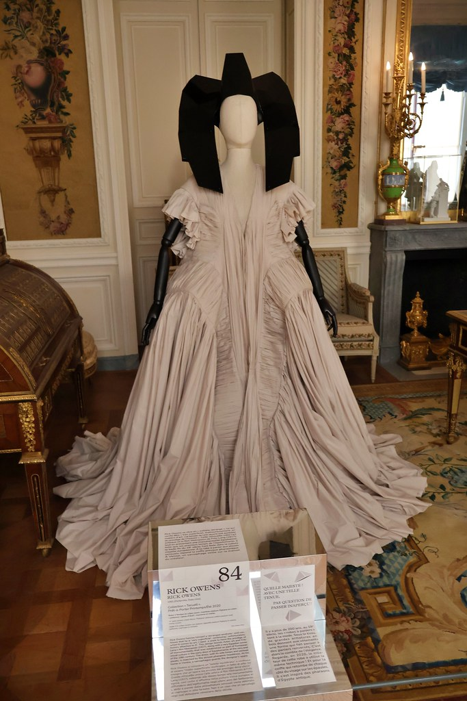
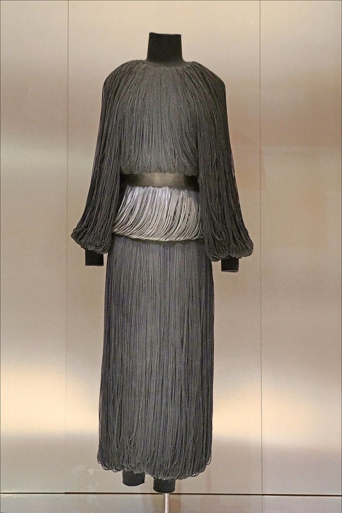
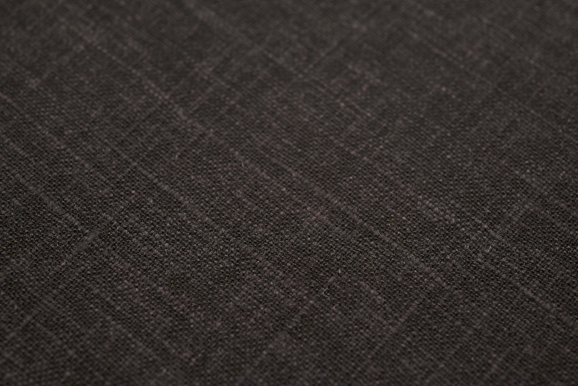

Project 001 / 2024
FORM
A study of volume, proportion and the architecture of the body.
- Inspiration
- Plaster casts in a sculpture studio, and the way a shoulder holds a shadow.
- Design idea
- Garments that keep their shape when no one is wearing them.
- Material and technique
- Pleated silk georgette, hand-set pleats, internal tape structures that replace seams.


Material study. Washed linen, 240 gsm.